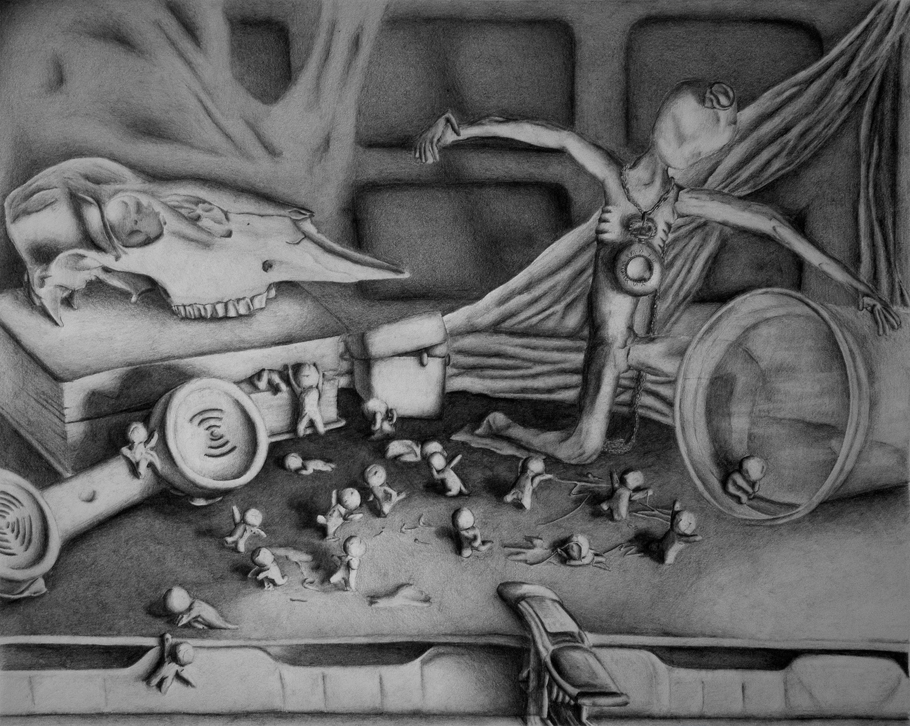
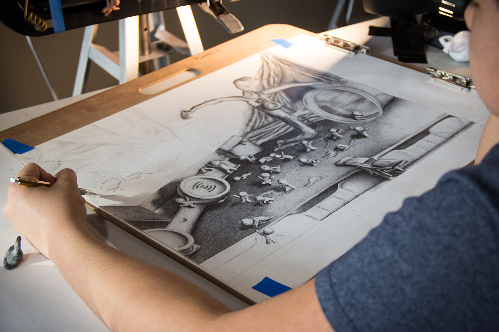

E S C A P E f r o m R E A L I T Y
The message behind the drawing projects the fear people have growing up. The fear for what's to come and the inevitable day of death.

"Escape From Reality is an observational illustration done for the RISD portfolio. The drawing took 4 weeks in a span of a month and a half. Below the process, from transfer to render, is shown."
